This document covers the storage and state management systems in the agent-swarm-kit framework. These systems provide persistent data storage with embedding-based search capabilities and managed state with middleware support. Both systems support client-specific and shared modes of operation.
For information about data persistence to the file system, see Persistence and History. For session-level coordination and lifecycle management, see Session Management. For practical guidance on using these systems, see Managing State and Storage.
The agent-swarm-kit framework provides two primary data management systems: Storage for searchable data with embedding-based retrieval, and State for managed application state with middleware processing. Both systems operate in two modes: client-specific instances scoped to individual sessions, and shared instances accessible across all clients.

The storage system provides embedding-based data storage with similarity search capabilities. It centers around the ClientStorage class which implements the IStorage interface and provides operations for data manipulation with vector search.

The ClientStorage class uses several key patterns:
upsert, remove, clear) go through a queued dispatcher to ensure sequential execution_createEmbedding method caches embedding calculations by item IDwaitForInit method ensures data loading happens exactly once
The connection services provide instance management with different scoping strategies:
StorageConnectionService creates instances keyed by ${clientId}-${storageName}SharedStorageConnectionService creates instances keyed by ${storageName} only, using fixed clientId: "shared"shared=true in schemaThe state system provides managed application state with middleware processing and queued operations. It centers around the ClientState class which implements the IState interface.

The ClientState class implements several key patterns:
stateChanged Subject
The state connection services follow similar patterns to storage:
setState operations are wrapped with queued() for serializationStateSchemaService including middleware and persistenceBoth storage and state systems support two operational modes that determine data visibility and isolation.
In client-specific mode, each session gets its own isolated instance:
| Aspect | Storage | State |
|---|---|---|
| Instance Key | ${clientId}-${storageName} |
${clientId}-${stateName} |
| Data Isolation | Per-session data | Per-session state |
| Use Cases | User documents, conversation history | User preferences, session state |
| Service | StorageConnectionService |
StateConnectionService |
| Utility Class | StorageUtils |
StateUtils |
In shared mode, all sessions access the same instance:
| Aspect | Storage | State |
|---|---|---|
| Instance Key | ${storageName} only |
${stateName} only |
| Client ID | Fixed: "shared" |
Fixed: "shared" |
| Use Cases | System knowledge base, shared documents | Global configuration, shared counters |
| Service | SharedStorageConnectionService |
SharedStateConnectionService |
| Utility Class | SharedStorageUtils |
SharedStateUtils |
The mode is determined by the shared flag in the schema configuration:
// Client-specific storage
const storageSchema = {
storageName: "user-documents",
shared: false, // or omitted (defaults to false)
// ...
}
// Shared storage
const sharedStorageSchema = {
storageName: "knowledge-base",
shared: true,
// ...
}
The session memory system provides lightweight, non-persistent storage for session-scoped data through MemorySchemaService and SchemaUtils.

Session memory provides:
writeValue() merges new data with existing session data using Object.assign()SchemaUtils methods validate client sessions before memory operationsPersistMemoryAdapter when CC_PERSIST_MEMORY_STORAGE is enabledserialize() method flattens objects for display or loggingStorage and state systems integrate with agent execution through utility classes that provide validated access patterns.

The utility classes enforce a three-layer validation:

State utilities support both direct value assignment and function-based dispatch:
setState(newValue, payload) sets state directlysetState(async (prev) => newValue, payload) computes new state from previous